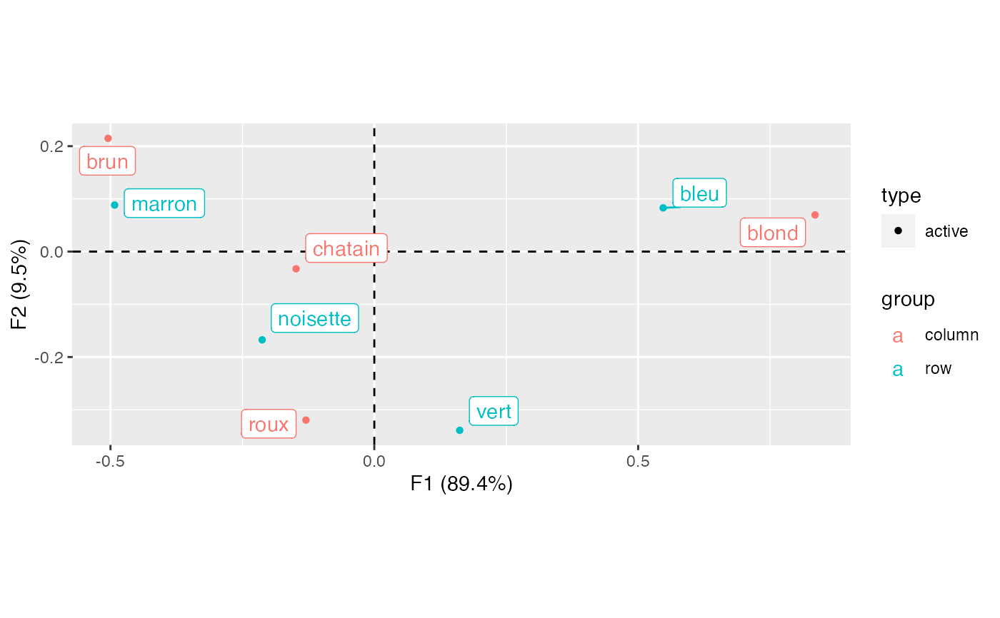
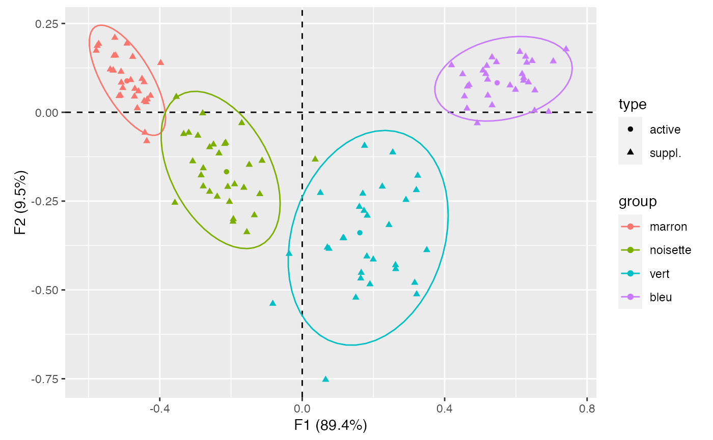
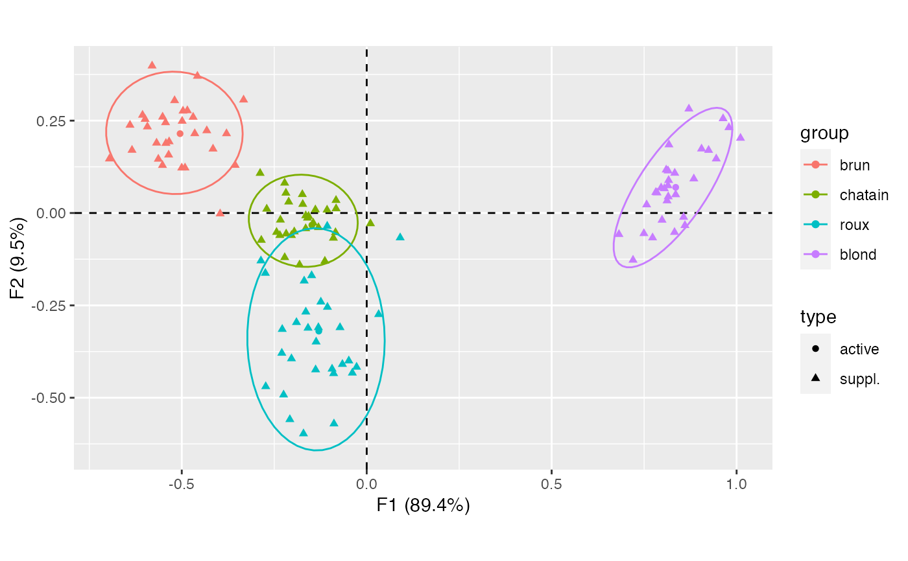
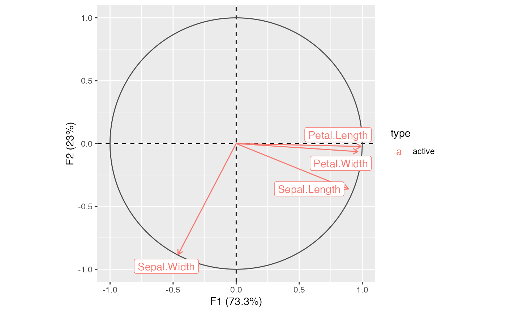
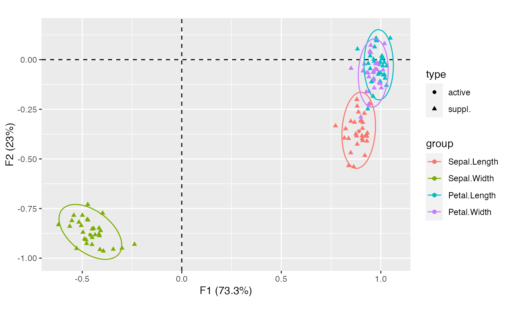

Checks analysis with partial bootstrap resampling.
bootstrap(object, ...)
# S4 method for numeric
bootstrap(object, do, n, ...)
# S4 method for integer
bootstrap(object, do, n, ...)
# S4 method for BootstrapVector
summary(
object,
level = 0.95,
type = c("student", "normal"),
probs = c(0.25, 0.75),
na.rm = FALSE,
...
)
# S4 method for CA
bootstrap(object, n = 30)
# S4 method for PCA
bootstrap(object, n = 30)Arguments
- object
A
numericor anintegervector or aCAorPCAobject (see below).- ...
Currently not used.
- do
A
functionthat takesobjectas an argument and returns a single numeric value.- n
A non-negative
integergiving the number of bootstrap replications.- level
A length-one
numericvector giving the confidence level. Must be a single number between \(0\) and \(1\). IfNULL, no confidence interval are computed.- type
A
characterstring giving the type of confidence interval to be returned. It must be one "student" (default) or "normal". Any unambiguous substring can be given. Only used iflevelis notNULL.``- probs
A
numericvector of probabilities with values in \([0,1]\) (seestats::quantile()). IfNULL, quantiles are not computed.- na.rm
A
logicalscalar: should missing values be removed fromobjectbefore the sample statistics are computed?
Value
If object is a numeric or an integer vector, bootstrap()
returns a BootstrapVector object (i.e. a numeric vector of the n
bootstrap values of do).
If object is a CA or a PCA object, bootstrap()
returns a BootstrapCA or a BootstrapPCA object.
summary() returns a numeric vector with the following elements:
minMinimum value.
meanMean value.
maxMaximum value.
lowerLower bound of the confidence interval.
upperUpper bound of the confidence interval.
Q*Sample quantile to
*probability.
Methods (by class)
numeric: Samples randomly from the elements ofobjectwith replacement.integer: Samples observations from a multinomial distribution.
References
Greenacre, Michael J. Theory and Applications of Correspondence Analysis. London: Academic Press, 1984.
Lebart, L., Piron, M. and Morineau, A. Statistique exploratoire multidimensionnelle: visualisation et inférence en fouille de données. Paris: Dunod, 2006.
See also
Other resampling methods:
jackknife()
Author
N. Frerebeau
Examples
library(ggrepel)
#> Loading required package: ggplot2
## Random samples from x with replacement
x <- rnorm(20) # numeric
boot <- bootstrap(x, do = mean, n = 100) # Sample mean
summary(boot)
#> min mean max lower upper Q25 Q75
#> -1.0059703 -0.3653885 0.2892323 -0.4152251 -0.3155518 -0.5276921 -0.2306458
## Sample observations from a multinomial distribution
x <- sample(1:100, 100, TRUE) # integer
boot <- bootstrap(x, do = median, n = 100)
summary(boot)
#> min mean max lower upper Q25 Q75
#> 44.50000 48.32000 51.00000 48.00327 48.63673 47.00000 49.62500
## Partial bootstrap on CA
## Data from Lebart et al. 2006, p. 170-172
color <- data.frame(
brun = c(68, 15, 5, 20),
chatain = c(119, 54, 29, 84),
roux = c(26, 14, 14, 17),
blond = c(7, 10, 16, 94),
row.names = c("marron", "noisette", "vert", "bleu")
)
## Compute correspondence analysis
X <- ca(color)
## Plot results
plot(X) +
ggrepel::geom_label_repel()

## Bootstrap (30 replicates)
Y <- bootstrap(X, n = 30)
# \donttest{
## Get replicated coordinates
get_replications(Y, margin = 1)
#> , , 1
#>
#> F1 F2 F3
#> marron -0.5144494 0.04592072 0.037763717
#> noisette -0.3575021 -0.25433253 0.248158474
#> vert 0.1504548 -0.52147483 -0.175967555
#> bleu 0.5834851 0.07588490 -0.001372455
#>
#> , , 2
#>
#> F1 F2 F3
#> marron -0.4437285 0.03210735 -0.002202316
#> noisette -0.2599609 -0.09804652 0.231481893
#> vert 0.1901566 -0.48395337 -0.136968923
#> bleu 0.5211628 0.04740176 -0.040962720
#>
#> , , 3
#>
#> F1 F2 F3
#> marron -0.5716133 0.19286257 -0.19167702
#> noisette -0.2779085 -0.20834771 0.23013908
#> vert -0.0368240 -0.39833824 -0.17894909
#> bleu 0.6218122 0.09709469 0.01707833
#>
#> , , 4
#>
#> F1 F2 F3
#> marron -0.5240129 0.1600902 0.104016224
#> noisette -0.3075575 -0.1377154 0.094215346
#> vert 0.1165735 -0.3538941 -0.140089488
#> bleu 0.7050615 0.1435473 0.009752318
#>
#> , , 5
#>
#> F1 F2 F3
#> marron -0.4760488 0.15625544 -0.07008544
#> noisette -0.3535715 0.04362916 -0.06029457
#> vert 0.3497524 -0.38769515 -0.16205706
#> bleu 0.4687915 0.07708208 0.08948945
#>
#> , , 6
#>
#> F1 F2 F3
#> marron -0.3975013 0.1389013 0.1261041200
#> noisette -0.1639401 -0.2121857 0.0772777790
#> vert 0.3243218 -0.1782659 -0.0009433727
#> bleu 0.5182200 0.1308402 -0.0479379732
#>
#> , , 7
#>
#> F1 F2 F3
#> marron -0.5286943 0.15945849 0.002933051
#> noisette -0.3329166 -0.06090267 0.013700620
#> vert 0.1734681 -0.27711711 0.151998686
#> bleu 0.4915327 -0.03067339 -0.068165688
#>
#> , , 8
#>
#> F1 F2 F3
#> marron -0.47110194 0.04460017 0.04561962
#> noisette -0.21504574 -0.08576953 0.04862615
#> vert 0.07044073 -0.38046344 -0.02667932
#> bleu 0.50746485 0.11775379 -0.02693202
#>
#> , , 9
#>
#> F1 F2 F3
#> marron -0.4700861 0.06629554 -0.01263434
#> noisette -0.1934102 -0.30052483 -0.05368026
#> vert 0.2436742 -0.31706904 -0.10789153
#> bleu 0.6216392 0.08922619 -0.07461502
#>
#> , , 10
#>
#> F1 F2 F3
#> marron -0.4382095 0.02882566 -0.02380509
#> noisette -0.1192840 -0.23010436 0.10558442
#> vert 0.2618985 -0.43004655 -0.14511977
#> bleu 0.4626615 0.01072967 0.01220368
#>
#> , , 11
#>
#> F1 F2 F3
#> marron -0.4597767 0.05932493 0.01229403
#> noisette -0.2794327 -0.00272510 0.11555287
#> vert 0.2542311 -0.11268755 -0.06941889
#> bleu 0.5988052 0.06356882 -0.04352207
#>
#> , , 12
#>
#> F1 F2 F3
#> marron -0.50806866 0.08371295 0.05189330
#> noisette -0.16990310 -0.03028741 -0.08917922
#> vert 0.05096905 -0.22676255 -0.15253116
#> bleu 0.53297021 0.15497770 0.08852877
#>
#> , , 13
#>
#> F1 F2 F3
#> marron -0.5391205 0.12088231 -0.14568119
#> noisette -0.2387924 -0.23724900 -0.08755706
#> vert 0.2247296 -0.20892014 -0.14532702
#> bleu 0.4639659 0.07269596 0.09457171
#>
#> , , 14
#>
#> F1 F2 F3
#> marron -0.48160485 0.09102332 0.001769885
#> noisette -0.28399060 -0.17714871 -0.080609957
#> vert -0.08265905 -0.53878198 0.083754496
#> bleu 0.64554360 0.14456233 -0.043415861
#>
#> , , 15
#>
#> F1 F2 F3
#> marron -0.5312564 0.1174841 0.01849189
#> noisette -0.1943087 -0.3077501 -0.15787893
#> vert 0.1814496 -0.4055791 -0.07202107
#> bleu 0.6304750 0.1399284 0.04257843
#>
#> , , 16
#>
#> F1 F2 F3
#> marron -0.5086616 0.1143008 -0.08479643
#> noisette -0.1344174 -0.2896046 0.14904719
#> vert 0.3159410 -0.4796452 -0.33726811
#> bleu 0.5453653 0.1412825 0.02891319
#>
#> , , 17
#>
#> F1 F2 F3
#> marron -0.4498776 0.09416559 0.04493806
#> noisette -0.2600865 -0.22339735 0.09993952
#> vert 0.1994876 -0.41411068 -0.06606489
#> bleu 0.4190720 0.13262672 -0.03764940
#>
#> , , 18
#>
#> F1 F2 F3
#> marron -0.5305314 0.1183622 -0.05038641
#> noisette -0.1900453 -0.2023706 0.10799179
#> vert 0.3213301 -0.5121249 -0.15709984
#> bleu 0.6108414 0.1702615 -0.17013814
#>
#> , , 19
#>
#> F1 F2 F3
#> marron -0.57845077 0.17353816 -0.12980786
#> noisette -0.29298357 -0.06556182 -0.10179696
#> vert 0.06573631 -0.75273520 -0.31501271
#> bleu 0.74093650 0.17760246 -0.01936847
#>
#> , , 20
#>
#> F1 F2 F3
#> marron -0.44180346 -0.05726193 -0.043155847
#> noisette 0.03641889 -0.13277726 0.004791936
#> vert 0.18252761 -0.29075028 0.047972159
#> bleu 0.63519714 0.08439716 0.005949654
#>
#> , , 21
#>
#> F1 F2 F3
#> marron -0.5757512 0.18703115 -0.078838526
#> noisette -0.2779133 -0.15737491 0.137963128
#> vert 0.1749809 -0.09403376 0.057141479
#> bleu 0.5331902 0.01993771 -0.008598128
#>
#> , , 22
#>
#> F1 F2 F3
#> marron -0.4439822 0.08492290 0.01873950
#> noisette -0.1488211 -0.14757555 0.08743671
#> vert 0.2625071 -0.44113755 -0.10822891
#> bleu 0.6918140 0.00156235 -0.04494459
#>
#> , , 23
#>
#> F1 F2 F3
#> marron -0.5038630 0.06851817 -0.03395575
#> noisette -0.1127495 -0.13621545 -0.06773477
#> vert 0.1656866 -0.45162120 -0.03034042
#> bleu 0.5206290 0.09223284 -0.02860564
#>
#> , , 24
#>
#> F1 F2 F3
#> marron -0.4631893 0.01170825 0.04485527
#> noisette -0.2090455 -0.20965126 0.08302489
#> vert 0.1143938 -0.35432693 -0.02102765
#> bleu 0.4556080 0.04505635 0.03651140
#>
#> , , 25
#>
#> F1 F2 F3
#> marron -0.5262598 0.2099296 -0.09863046
#> noisette -0.1555399 -0.3372082 0.19000486
#> vert 0.2912373 -0.2463136 0.13201257
#> bleu 0.6273444 0.1567278 -0.02612434
#>
#> , , 26
#>
#> F1 F2 F3
#> marron -0.4921115 0.19357329 0.01056431
#> noisette -0.3187633 -0.05736416 0.11097407
#> vert 0.3205101 -0.21874673 -0.14693680
#> bleu 0.6175054 0.10794079 -0.02733345
#>
#> , , 27
#>
#> F1 F2 F3
#> marron -0.51069242 0.047583156 0.01192044
#> noisette -0.24922771 -0.090545635 -0.10593965
#> vert 0.07528246 -0.383926766 0.08226882
#> bleu 0.65239510 0.004790828 0.06172819
#>
#> , , 28
#>
#> F1 F2 F3
#> marron -0.4258982 0.04666402 0.06320432
#> noisette -0.2178007 -0.08880301 0.23515605
#> vert 0.1701829 -0.22889883 0.22712352
#> bleu 0.5153774 0.10811085 0.05160324
#>
#> , , 29
#>
#> F1 F2 F3
#> marron -0.4350284 0.03669095 0.08666300
#> noisette -0.2043776 -0.25194808 -0.06583421
#> vert 0.1643182 -0.46740123 -0.38751930
#> bleu 0.6532954 0.06187541 -0.05326970
#>
#> , , 30
#>
#> F1 F2 F3
#> marron -0.4366169 -0.08105817 0.08070536
#> noisette -0.2337112 -0.11545211 0.12034809
#> vert 0.1603736 -0.26601188 -0.21268178
#> bleu 0.4504197 0.10744035 0.02843965
#>
get_replications(Y, margin = 2)
#> , , 1
#>
#> F1 F2 F3
#> brun -0.46922144 0.25960670 -0.02827676
#> chatain -0.13054728 -0.03903825 0.13547047
#> roux -0.04842892 -0.39985105 -0.13549147
#> blond 1.01050315 0.20279086 -0.07635972
#>
#> , , 2
#>
#> F1 F2 F3
#> brun -0.49894363 0.24881541 -0.008453495
#> chatain -0.20351165 -0.06038152 0.064978218
#> roux -0.07215798 -0.30978505 -0.281297336
#> blond 0.78488472 0.05483889 -0.079017486
#>
#> , , 3
#>
#> F1 F2 F3
#> brun -0.59914891 0.25392638 -0.18639108
#> chatain -0.08438529 -0.05253839 0.11953508
#> roux -0.15864628 -0.31119360 -0.17614533
#> blond 0.96344282 0.25562699 0.01826993
#>
#> , , 4
#>
#> F1 F2 F3
#> brun -0.56333911 0.14609984 -0.02377228
#> chatain -0.23327352 -0.01867403 0.04418337
#> roux -0.08859123 -0.57038982 -0.07359434
#> blond 0.94499344 0.14680921 -0.02936406
#>
#> , , 5
#>
#> F1 F2 F3
#> brun -0.56808382 0.18966557 0.08043951
#> chatain -0.08299969 0.03453567 -0.02108683
#> roux -0.13813904 -0.42403441 -0.25116442
#> blond 0.74939181 -0.05526753 -0.18099063
#>
#> , , 6
#>
#> F1 F2 F3
#> brun -0.37903965 0.21505891 -0.03955083
#> chatain -0.21772289 -0.05625874 0.01959963
#> roux -0.02738194 -0.41692256 0.12445157
#> blond 0.68193091 -0.05770288 -0.09836367
#>
#> , , 7
#>
#> F1 F2 F3
#> brun -0.54280393 0.188878068 0.12891328
#> chatain -0.15711234 -0.008590926 0.09204158
#> roux 0.09049016 -0.066760971 0.15821605
#> blond 0.90523982 0.173750615 0.02803670
#>
#> , , 8
#>
#> F1 F2 F3
#> brun -0.4155519 0.17359852 0.02191016
#> chatain -0.1958699 -0.05054503 -0.01830104
#> roux -0.1367845 -0.34860527 -0.13837830
#> blond 0.8143958 0.07436268 0.02329346
#>
#> , , 9
#>
#> F1 F2 F3
#> brun -0.5438183 0.24491351 -0.051750505
#> chatain -0.2702999 0.01102673 0.038434787
#> roux -0.1899313 -0.29590206 0.126963547
#> blond 0.7959202 0.06845103 -0.007194382
#>
#> , , 10
#>
#> F1 F2 F3
#> brun -0.48496082 0.2773426 -0.11652511
#> chatain -0.09006319 -0.0676832 -0.04587914
#> roux -0.03881893 -0.4327891 -0.26311389
#> blond 0.71998447 -0.1272326 -0.13653142
#>
#> , , 11
#>
#> F1 F2 F3
#> brun -0.5000808 0.12226410 0.02614141
#> chatain -0.2109421 0.03026079 0.07848748
#> roux -0.1068003 -0.03533955 -0.05580840
#> blond 0.8327505 0.10807996 -0.03227451
#>
#> , , 12
#>
#> F1 F2 F3
#> brun -0.39626313 -0.001928637 0.07788524
#> chatain -0.08278733 0.012012998 0.04257593
#> roux -0.22469203 -0.492051486 0.02052727
#> blond 0.83522898 0.049924589 0.11265774
#>
#> , , 13
#>
#> F1 F2 F3
#> brun -0.49121401 0.12236842 -0.05243515
#> chatain 0.01015259 -0.02857890 0.05419527
#> roux -0.20343578 -0.39410163 0.06998736
#> blond 0.83218537 -0.05200776 -0.08212398
#>
#> , , 14
#>
#> F1 F2 F3
#> brun -0.5341854 0.1932657 0.12250234
#> chatain -0.2436905 -0.0519101 0.04686782
#> roux -0.2295255 -0.3791110 0.15149885
#> blond 0.8710178 0.2819335 0.12353073
#>
#> , , 15
#>
#> F1 F2 F3
#> brun -0.6060470 0.26514441 -0.03799123
#> chatain -0.2184289 0.05424029 -0.02764492
#> roux -0.2730097 -0.46948852 0.16140409
#> blond 0.8843469 0.09278092 0.03844951
#>
#> , , 16
#>
#> F1 F2 F3
#> brun -0.5194080 0.30455520 -0.12747835
#> chatain -0.1650052 -0.04193713 0.17591477
#> roux -0.2078009 -0.55870322 -0.11964434
#> blond 0.7728697 -0.06680367 -0.03998203
#>
#> , , 17
#>
#> F1 F2 F3
#> brun -0.3328654 0.30633987 0.013516391
#> chatain -0.1739966 0.05041511 0.110676681
#> roux -0.1061690 -0.25469447 0.093703585
#> blond 0.8170257 0.18491037 0.007963738
#>
#> , , 18
#>
#> F1 F2 F3
#> brun -0.45771822 0.37062184 -0.04845449
#> chatain -0.28493365 -0.07339783 0.02455190
#> roux -0.09365595 -0.42200487 -0.19009642
#> blond 0.85675912 -0.01114326 -0.07040310
#>
#> , , 19
#>
#> F1 F2 F3
#> brun -0.5929706 0.233464385 0.06328346
#> chatain -0.1388030 0.008936045 0.02885647
#> roux -0.1709288 -0.597232850 -0.24188391
#> blond 0.9791862 0.231484283 0.06032774
#>
#> , , 20
#>
#> F1 F2 F3
#> brun -0.5517751 0.260060895 -0.10741933
#> chatain -0.1648139 -0.006989896 -0.09874646
#> roux -0.2859750 -0.129098682 -0.14502114
#> blond 0.7567852 0.022561760 0.06805674
#>
#> , , 21
#>
#> F1 F2 F3
#> brun -0.6345028 0.17024033 -0.07312260
#> chatain -0.2217029 -0.12021221 0.12387460
#> roux -0.1488895 -0.16912605 0.13234487
#> blond 0.8602617 -0.03352479 -0.05170073
#>
#> , , 22
#>
#> F1 F2 F3
#> brun -0.63999296 0.23805199 0.01543302
#> chatain -0.16006926 -0.01337901 0.07908143
#> roux 0.03228883 -0.27435914 -0.05313528
#> blond 0.81474851 0.11431149 0.02812959
#>
#> , , 23
#>
#> F1 F2 F3
#> brun -0.4966597 0.27631795 0.018667819
#> chatain -0.1729262 0.02383955 -0.009925452
#> roux -0.1646587 -0.26753123 -0.018696680
#> blond 0.8046167 0.06618865 0.104720919
#>
#> , , 24
#>
#> F1 F2 F3
#> brun -0.4648714 0.21514377 -0.07041513
#> chatain -0.1445805 -0.02664909 -0.03436927
#> roux -0.1306445 -0.30969963 -0.11170279
#> blond 0.8119633 0.03338040 -0.04389079
#>
#> , , 25
#>
#> F1 F2 F3
#> brun -0.5802448 0.39838541 -0.16009071
#> chatain -0.1815588 -0.14012641 0.11697214
#> roux -0.2283843 -0.31457252 0.18219817
#> blond 0.8151631 0.04432331 -0.02650851
#>
#> , , 26
#>
#> F1 F2 F3
#> brun -0.5521219 0.12923910 0.02801222
#> chatain -0.2348426 -0.06035110 0.11535852
#> roux -0.0656850 -0.40929142 -0.05623771
#> blond 0.7984231 -0.01901212 -0.13241568
#>
#> , , 27
#>
#> F1 F2 F3
#> brun -0.6956132 0.146773892 0.07790842
#> chatain -0.1072232 0.008411629 -0.06171652
#> roux -0.1239790 -0.240601238 -0.01005638
#> blond 0.9242991 0.170048965 0.05421862
#>
#> , , 28
#>
#> F1 F2 F3
#> brun -0.4323912 0.22311821 0.02759799
#> chatain -0.1131343 -0.13000186 0.02330273
#> roux -0.1690689 -0.18356051 -0.07507983
#> blond 0.7815168 0.05602229 -0.04057646
#>
#> , , 29
#>
#> F1 F2 F3
#> brun -0.53545335 0.1573871 -0.059631727
#> chatain -0.28818182 0.1077975 0.010683735
#> roux -0.08944606 -0.4341900 -0.058087169
#> blond 0.80965729 0.1169407 -0.008587837
#>
#> , , 30
#>
#> F1 F2 F3
#> brun -0.3556313 0.12946213 0.02070035
#> chatain -0.2218384 0.08135789 0.09213227
#> roux -0.2740128 -0.16271332 -0.08156687
#> blond 0.8161976 0.08855043 0.01905432
#>
# }
## Plot with ellipses
plot_rows(Y) +
ggplot2::stat_ellipse()

plot_columns(Y) +
ggplot2::stat_ellipse()

## Partial bootstrap on PCA
## Compute principal components analysis
data(iris)
X <- pca(iris)
#> 1 qualitative variable was removed: Species.
## Plot results
plot_columns(X) +
ggrepel::geom_label_repel()

## Bootstrap (30 replicates)
Y <- bootstrap(X, n = 30)
## Plot with ellipses
plot_columns(Y) +
ggplot2::stat_ellipse()
